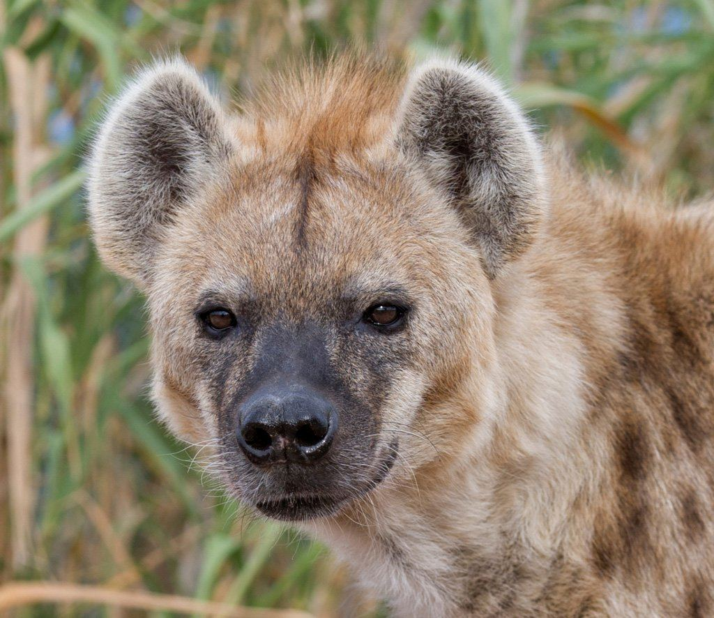

Hyenas
All about Hyenas

Hyenas are fascinating creatures known for their unique social structures and behaviors. They belong to the family Hyaenidae and are native to Africa and parts of Asia. Despite their reputation as scavengers, hyenas are skilled hunters and play a crucial role in their ecosystems.
Interesting Facts about Hyenas
- Hyenas have a matriarchal society, where females are dominant over males.
- Spotted hyenas are known for their powerful jaws and ability to crush bones.
- They communicate using a variety of vocalizations, including the famous "laugh."
- Hyenas are highly intelligent and work together to hunt and protect their clan.
- There are four species of hyenas: spotted, brown, striped, and aardwolf.
- Hyenas have a unique digestive system that allows them to consume and digest almost all parts of their prey, including bones.
- They are known for their endurance and can run long distances at speeds of up to 60 km/h (37 mph).
- Hyenas have a keen sense of smell, which they use to locate food and communicate with other members of their clan.
- They are primarily nocturnal, being most active during the night.
- Hyenas play a vital role in maintaining the balance of their ecosystems by controlling prey populations and cleaning up carcasses.
Click here to know more about Hyenas!
This page was created by Aradhay Kaudinya for educational purposes only. And to share knowledge about Hyenas.